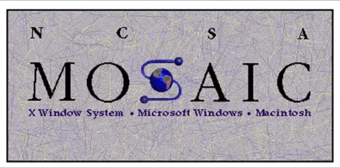

El lenguaje de marcado de hipertexto (HTML) es un sistema para marcar documentos con etiquetas informativas que indican cómo se debe presentar el texto en los documentos y cómo se deben vincular los documentos entre sí. Los enlaces de hipertexto son muy potentes. El esquema de marcado HTML permite crear aplicaciones cliente-servidor interactivas, multiplataforma y multimedia. Esta cadena de adjetivos no es solo palabrería; existen sistemas así. Uno, llamado la World Wide Web (WWW), vive en Internet, proporcionando organización a una vasta variedad de recursos en computadoras ubicadas en todo el mundo. La Web, también conocida como WWW o W3, juega un papel importante en el desarrollo continuo del HTML, y la Web también jugará un papel importante en la forma en que usted escribe y estructura documentos HTML. La World Wide Web representa la audiencia más grande posible para su trabajo.
HTML no es un lenguaje de programación y un documento HTML no es un programa de computadora. Es mucho más simple que eso. Un programa de computadora es una serie de procedimientos e instrucciones aplicadas, típicamente, a datos externos. Un documento HTML, sin embargo, es texto plano. El lenguaje HTML especifica la gramática y la sintaxis de las etiquetas de marcado que, cuando se insertan en los datos, indican a los programas —como NCSA Mosaic— cómo presentar el documento. Técnicamente, HTML se define como un Lenguaje de Marcado Estándar Generalizado (SGML), Definición de Tipo de Documento (DTD). Un documento HTML se dice que es una instancia de un documento SGML.
SGML se originó como GML (Lenguaje de Marcado General) en IBM a fines de los años sesenta como un intento de resolver algunos de los problemas de transporte de documentos a través de diferentes sistemas informáticos. El término "markup" proviene de la industria editorial, donde se refiere a las instrucciones de composición tipográfica codificadas insertadas en un manuscrito por un editor. SGML tiene un significado generalizado que, en lugar de especificar exactamente cómo presentar un documento, describe tipos de documentos, junto con lenguajes de marcado para formatear y presentar instancias de cada tipo. GML se convirtió en SGML cuando fue aceptado como estándar por la Organización Internacional de Normalización (ISO) en Ginebra, Suiza (número de referencia ISO 8879:1986).
Un documento SGML tiene tres partes. La primera describe el conjunto de caracteres y, lo más importante, qué caracteres se utilizan para diferenciar el texto del marcado. La segunda parte declara el tipo de documento y qué marcas son aceptadas como legales. La tercera parte se llama la instancia del documento y contiene el texto real y las etiquetas de marcado. Las tres partes no necesitan estar en el mismo archivo físico, lo cual es algo bueno porque nos permite olvidarnos de SGML y tratar únicamente con HTML. Todos los navegadores HTML asumen la misma información para el conjunto de caracteres SGML y las definiciones de tipo de documento, por lo que solo tenemos que trabajar con instancias de documentos HTML: simples archivos de texto.
La base conjunto de caracteres de un documento HTML es ISO 8859/1, también conocido como Latin-1. Es un subconjunto alfabético con caracteres para la mayoría de los idiomas americanos y europeos. ISO 646, también conocido como ASCII, es un subconjunto de 7 bits de Latin-1. No hay obligación de usar nada más que los 128 caracteres ASCII estándar en un documento HTML. De hecho, apegarse al ASCII directo es alentado, ya que permite que un documento HTML se edite con cualquier editor de texto en cualquier sistema informático y se transporte a través de cualquier red, incluso con los sistemas de transferencia de archivos y correo electrónico más rudimentarios. Para hacer esto posible, HTML incluye entidades de caracteres para la mayoría de los caracteres no ASCII Latin-1 comúnmente utilizados. Las entidades de caracteres comienzan con el carácter ampersand (&), seguido del nombre o número del carácter, seguido de un punto y coma. Por ejemplo, la entidad para un acento grave acentuado (`) es è.
Las etiquetas de marcado HTML están delimitadas por los corchetes angulares, < y >. Aparecen de forma singular, como la etiqueta <p> que indica un salto de párrafo en el texto, o como una pareja de etiquetas de apertura y cierre, como <B>Atención!</B>, que es una instrucción para presentar la cadena de texto Atención en una tipografía negrita. También hay etiquetas para dar formato de texto, etiquetas para especificar vínculos de hipertexto, etiquetas para incluir sonido e imágenes, y etiquetas para definir campos de entrada para páginas interactivas.
Lo que hay sobre el lenguaje de marcado de hipertexto son las entidades de caracteres y las etiquetas de marcado. Sin embargo, este sistema de entidades y etiquetas está creciendo. Actualmente existen varios niveles estandarizados de HTML.
El Nivel 1 es el nivel obligatorio para todos los navegadores WWW. Es esencialmente lo que fue aceptado por los primeros navegadores (nivel 0), más imágenes.
El Nivel 2 incluye todas las características del nivel 1, más capacidades para definir campos de entrada de usuario. En el momento de escribir esto, la especificación SGML para el nivel 2 se está finalizando; esto es principalmente una cuestión de ponerse al día con las prácticas implementadas en los navegadores web populares.
El Nivel 3, también conocido como HTML+, se encuentra actualmente en desarrollo. Incluye etiquetas de marcado para objetos como tablas, figuras y ecuaciones matemáticas.
El próximo capítulo describe el lenguaje HTML, incluyendo la mayoría de las características de nivel 2. Casi todas las evoluciones de HTML se dan en la World Wide Web en forma de grupos de discusión, que publican cambios propuestos y solicitan comentarios. Las especificaciones completas de HTML (el SGML DTD) siempre se pueden encontrar en la Web. La Web también es el lugar para buscar la documentación más actualizada de HTML y SGML, la mayor parte de ella en hipertexto.
El Apéndice C tiene una lista de direcciones web de muchos de estos documentos.
¿Qué es exactamente el hipertexto? El hipertexto es texto que no está restringido a ser lineal. Al leer este libro, por ejemplo, puede omitir algunos capítulos y hacer viajes ocasionales a las anotaciones. Aún así, se le presenta una secuencia lineal de páginas. En contraste, el hipertexto organiza la información como una red interconectada de texto vinculado. Se pueden seguir diferentes caminos a través del trabajo por diferentes lectores; los lectores pueden elegir entre todas las conexiones que los autores proporcionaron como las asociaciones más relevantes para sus necesidades inmediatas. La hipermedia se refiere a aplicaciones de hipertexto que contienen cosas además de objetos de texto. Las aplicaciones hipermedia abarcan gráficos, video, sonido y más. El lenguaje de marcado de hipertexto contiene etiquetas de marcado para especificar enlaces a objetos multimedia. Cómo se muestran estos objetos se deja al navegador, pero generalmente, las imágenes se expanden como ilustraciones o figuras dentro del texto, mientras que el sonido y la animación se presentan en sus propias ventanas con controles de reproducción y pausa.
En una página de hipertexto HTML, el texto resaltado que sirve como inicio de un enlace se llama ancla. Las anclas se pueden incrustar en otros elementos HTML, lo que le permite no solo asociar texto sino también listas de enlaces de hipertexto. Una imagen puede servir como ancla para un enlace, así como texto. Las pequeñas imágenes se pueden usar como iconos y botones activables en una página web. Esto es especialmente útil cuando desea crear un conjunto estándar de controles que se colocan en una serie de páginas web. Las imágenes también pueden tener múltiples anclas asociadas a diferentes áreas de la imagen, si se definen mapas de imágenes sensibles.
La maravillosa característica del hipertexto es que agrega una dimensión extra de estructura al contenido de su trabajo. Con el hipertexto, puedes resaltar relaciones alternativas además del orden lineal de secciones, capítulos y subcapítulos que se encuentran en la tabla de contenido. Un trabajo de hipertexto está limitado solo por el espacio de almacenamiento físico disponible para documentos vinculados. Para la World Wide Web y Internet, esto significa terabytes de datos, y la Web está creciendo más rápido de lo que nadie podría haber imaginado. Con los nuevos navegadores gráficos que se han vuelto disponibles en el último año, realmente experimentas la sensación de "navegar" a través de un espacio de información sin límites.
La idea y los conceptos de hipertexto e hipermedia han estado alrededor por un tiempo. Ted Nelson recibe el crédito de acuñar los términos en 1965. La primera aplicación hipermedia práctica fue el "Aspen Movie Map" hecho en MIT en 1978. Utilizó "videodiscos" y pantallas con tecnología Setchell Videoplayer. Filesystem, lanzado en 1984, dio bases de datos hipermedia a los primeros usuarios de Macintosh. En 1987, Apple introdujo HyperCard, escrito por Bill Atkinson, que incorporó muchos conceptos hipermedia. El desarrollo de unidades de CD-ROM para computadoras personales hizo que el desarrollo comercial y la comercialización de aplicaciones multimedia fueran una realidad. Y en 1989, Tim Berners-Lee y Robert Cailliau presentaron una propuesta a sus colegas en el CERN para un sistema hipermedia basado en cliente-servidor, y la World Wide Web nació.
Las aplicaciones HTML multimedia son similares en muchos sentidos a las aplicaciones HyperCard de Macintosh; lo suficiente como para que sea posible imitar aplicaciones HyperCard simples en HTML y viceversa. Ambos sistemas toman la forma de una web de nodos unidos con uno designado como inicio (la pila inicial para HyperCard y la página de inicio para un servidor de World Wide Web). Las diferencias, sin embargo, son significativas; la más importante es que las aplicaciones HyperCard solo se ejecutan en computadoras Macintosh, mientras que las aplicaciones HTML se ejecutan en redes vinculadas que conectan una variedad de tipos diferentes de computadoras.
HyperCard usa la metáfora de una pila de tarjetas que contienen capas de información: objetos (imágenes y campos de texto) y botones. Visualmente, las tarjetas no son más grandes que una pantalla de computadora y se presentan una a la vez. Un botón puede tener un script adjunto activado por un clic del mouse. Las acciones de script típicamente son enlaces a otras tarjetas o pilas. HyperTalk, el lenguaje de scripting que impulsa las aplicaciones HyperCard, es potente, elegante y bastante fácil de aprender.
La metáfora para aplicaciones HTML es la de una página de texto formateado e imágenes. Una página HTML puede ser de muchas páginas físicas de longitud, correspondiendo a un capítulo en un libro o una sección de un manual, sin embargo, tiene un ancho variable: el navegador reajusta la vista para envolver el texto y posicionar las imágenes para que se ajusten al ancho de la ventana de visualización. Los enlaces de hipertexto HTML se activan haciendo clic con un botón del mouse sobre el texto resaltado (generalmente subrayado y resaltado en un color diferente al del texto común) o una imagen. El enlace puede ir a otro texto en la misma página, a una nueva página web, o a algún otro tipo de recurso en la red o en Internet. Mientras que HyperTalk de HyperCard es definitivamente un lenguaje de programación, HTML no lo es. Es poderoso y fácil de aprender, pero no creo que mucha gente lo llame elegante.
Otra diferencia clave entre HyperCard y las aplicaciones HTML/Web es que HyperCard está diseñado para una computadora personal: mantienes tus propias copias de las pilas en el disco duro de tu computadora o en la red de área local. HyperCard es mejor para aplicaciones personales de mantenimiento de registros: libros de teléfonos y registros de tiempo, por ejemplo. Los documentos HTML, por otro lado, existen en un entorno cliente-servidor. Los clientes son los navegadores. Los servidores son programas que se ejecutan en computadoras remotas que proporcionan las páginas web y otros archivos solicitados por los navegadores. Debido a que HTML puede vincular documentos en varios servidores remotos, las aplicaciones HTML son más adecuadas para organizar y servir información a un público más amplio.
La próxima sección tendrá más que decir sobre los navegadores. Sin embargo, una discusión completa sobre los servidores queda fuera del alcance de este libro. Basta decir que la mayoría de los servidores web, pero no todos, se ejecutan en máquinas UNIX con conexiones de alta velocidad a Internet.
Para que una aplicación HTML "esté en la Web" significa que los archivos HTML y otros documentos que conforman la aplicación residen en un directorio que es accesible a un servidor web. Nota que esto no significa que deba haber un enlace desde alguna página web existente a su documento para que su documento forme parte de la Web. El navegador web asigna una dirección única, llamada Localizador Uniforme de Recursos (URL), para cada recurso que reconoce. Existen formatos de URL para objetos no HTML en Internet: Gophers, Servidores de Información de Área Amplia (WAIS), archivos ftp, Newsgroups y máquinas Telnet. Dado que la mayoría de los navegadores tienen la capacidad de cargar directamente una URL desde el usuario, prácticamente cualquier cosa en Internet también está en la World Wide Web.
Se ha escrito mucho recientemente sobre Internet, Mosaic y la World Wide Web. ¿Cuál es toda la emoción? ¿Es Mosaic la "aplicación asesina" de los 90? Bueno, podría ser. La primera vez que comiences a explorar la Web con un navegador gráfico como Mosaic, tendrás la asombrosa sensación de que un mito se ha hecho realidad ante tus ojos. El mito es el sueño de una base de datos universal de información que los escritores de ciencia ficción nos han dado en la última mitad de siglo. Hoy, con Mosaic y la World Wide Web, de hecho tenemos una sencilla interfaz fácil de usar para toda la información computarizada del mundo: el ciberespacio al alcance de tus dedos.
Mosaic es uno de varios programas navegadores que procesan documentos HTML en redes de servidores web. Una lista actualizada de software de navegador está disponible en la página de inicio de la World Wide Web en CERN, http://info.cern.ch/hypertext/WWW/Clients.html. Mosaic es el navegador principal y recibe la mayor parte de la prensa, en gran parte porque fue el primer navegador gráfico para la Web, y porque tiene versiones para Macintosh, Windows y sistemas UNIX/X-Windows. La popularidad de Mosaic no se ve disminuida por el hecho de que es gratuito. Fue desarrollado con dólares de impuestos de EE.UU. por el Centro Nacional de Actividades de Supercomputación (NCSA) en la Universidad de Illinois en Urbana, sede de la HAL 9000.
Este libro usa NCSA Mosaic para Macintosh, versión 2.0.0, para capturas de pantalla y ejemplos de documentos HTML formateados. Los resultados se verán casi iguales para las versiones de Windows y UNIX usando las preferencias predeterminadas para fuentes y estilos. Los ejemplos también deberían producir resultados similares para otros navegadores gráficos como Mac Web para Macintosh y Cello para Windows. NCSA está licenciando la tecnología Mosaic a varias corporaciones, así que para cuando leas esto, puede haber versiones comerciales disponibles con edición WYSIWYG y otras características interesantes. Mientras tanto, puedes obtener Mosaic del servidor FTP anónimo de NCSA, ftp://ftp.ncsa.uiuc.edu/Web/Mosaic/, así como de muchos servicios comerciales en línea, incluido ZiffNet.
Además de los navegadores web gráficos, también hay navegadores de modo línea, que se pueden usar a través de Telnet y clientes BBS. Probablemente el más popular de estos es Lynx de la Universidad de Kansas, que hace uso del conjunto de funciones de un DEC VT-100, una terminal de visualización común que es emulada por la mayoría del software de telecomunicaciones. Se utilizan teclas de cursor en lugar de un mouse para seleccionar y activar enlaces. La diferencia importante entre los navegadores gráficos y los navegadores de modo línea es que los navegadores gráficos se ejecutan en su computadora personal y pueden hacer uso completo de la caja de herramientas del sistema operativo, mientras que los navegadores de modo línea se ejecutan en la computadora de otra persona, a la que estás conectado como terminal remoto.
Para ejecutar Mosaic o cualquier otro navegador gráfico, su computadora debe ser parte de Internet. Esto no es tan importante como suena. Significa que su computadora debe ejecutar alguna forma del software de redes de Internet, TCP/IP, y si su máquina no está conectada a una red con una puerta de enlace a Internet, también necesitará software de módem, ya sea un controlador de Protocolo de Interfaz de Línea Serial (SLIP) o un controlador de Protocolo Punto a Punto (PPP). Estos controladores se ejecutan a nivel del sistema operativo de su computadora, permitiendo que Mosaic y otras aplicaciones cliente de Internet —como correo electrónico, gopher y Telnet, por ejemplo— se ejecuten concurrentemente, cada una en su propia ventana. TCP/IP (Protocolo de Control de Transmisión/Protocolo de Internet) toma la información de las aplicaciones cliente y la convierte en paquetes de datos con direccionamiento de Internet, luego pasa los paquetes al controlador de módem, que envía los datos a su módem y línea telefónica a una puerta de enlace a Internet. Las puertas de enlace son proporcionadas por los proveedores de servicios de Internet, quienes le darán una cuenta SLIP o PPP sobre una base por hora o tarifa plana. Las cuentas de tarifa plana cuestan alrededor de $35 por mes.
Mosaic también puede acceder localmente, en otras palabras, puedes implementar una aplicación HTML en tu propia red de área local y no estar conectado a Internet en absoluto. Sin embargo, para que tu aplicación forme parte de la World Wide Web, tus documentos deben ser accesibles a un servidor web; puedes ejecutar tu propio servidor: el software está disponible para una serie de máquinas—las versiones CERN y NCSA son gratuitas—pero es mejor encontrar espacio en el servidor web de otra persona. Si tu organización ya está ejecutando un servidor de Internet —gopher, por ejemplo— es probable que lo tenga, o esté considerando configurar un servidor World Wide Web también.
¿Es la World Wide Web lo mismo que Internet? Bueno, sí y no. Internet es físicamente mucho más grande que la Web; todavía hay más servidores Gopher que servidores Web, por ejemplo. Sin embargo, todo en Internet puede ser direccionado por un enlace web, así que, en cierto modo, la Web es Internet visto desde un punto de vista diferente, una capa sobre el hardware físico.
Internet comenzó a fines de la década de 1960 como un proyecto del Departamento de Defensa de los EE. UU. que vinculaba las computadoras de universidades e institutos de investigación militar. A principios de la década de 1980, el ejército se separó y obtuvo su propia red; el resto fue dado a la National Science Foundation (alguien tenía que administrar el hardware real); pero en realidad, nadie es propietario ni opera Internet. Es la mayor anarquía funcional del mundo. En los últimos años, el crecimiento de Internet ha sido explosivo. Nuevas redes se están conectando vía puertas de enlace a Internet a diario. En los últimos años, decenas de nuevos proveedores de servicios de Internet han aparecido en línea, proporcionando conexiones de bajo costo para el público en general. Hipertexto ha resultado ser una forma ideal de organizar los diversos recursos de Internet. La World Wide Web llegó justo a tiempo.